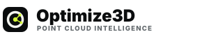
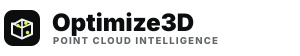
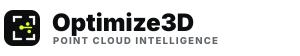
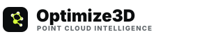

Option A · Point Cloud O추천

가장 미니멀합니다. Optimize3D의 O를 점군이 객체로 정리되는 순간처럼 보이게 했습니다.
RealityScan처럼 미니멀한 심벌과 이름이 함께 보이는 방향입니다. 포인트클라우드, AI 객체인식, 공간추론을 직접적인 회로·로봇 아이콘 대신 점군과 인식 프레임으로 추상화했습니다.

가장 미니멀합니다. Optimize3D의 O를 점군이 객체로 정리되는 순간처럼 보이게 했습니다.

AI 객체인식과 3D 계측의 의미가 분명합니다. B2B 제조기술 회사 느낌이 가장 강합니다.

스캐닝, 검사, 타깃팅 이미지가 명확합니다. 품질검사·편차분석 포지션에 적합합니다.

점군 분할과 AI 의미 인식의 느낌이 가장 강합니다. 연구 기반 AI 이미지를 살릴 때 좋습니다.